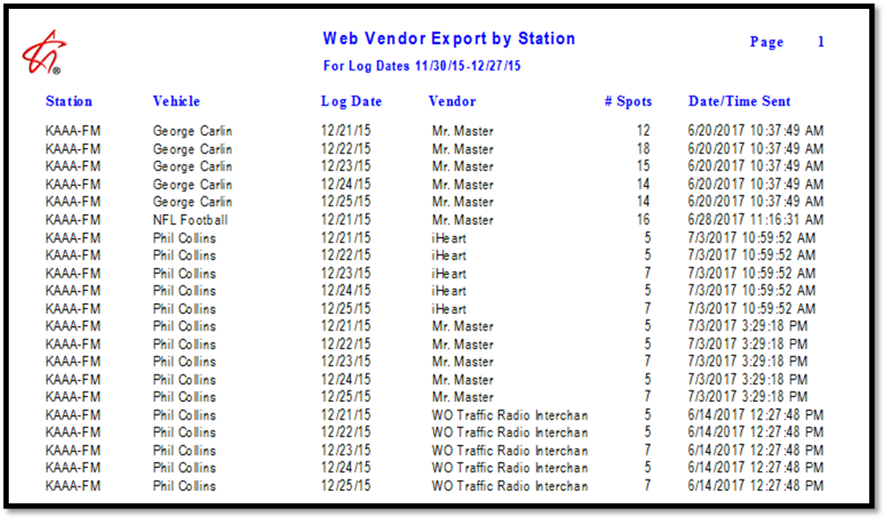

Auto-posted Affiliate Spots
Web Version 2 added the ability for airing information to get imported directly from services such as Marketron, Mr. Master, Radio Workflow, Wide Orbit, and others. This helps reduce the amount of manual work required and can improve the accuracy of posting information.
This section contains an overview of this feature.
Delivery Vendors
There are two settings on the Vendor Setup screen that affect how auto-imported spots will function on the Counterpoint Affidavit website. One setting makes it possible to configure whether to require station users to approve auto-imported airing information for that service, and another setting is used to configure whether to allow auto-imported airing information to be overridden by a station user for that service.
Approval for Auto-Imported Airing Information
From the Affiliate System File menu -> Vendor Setup, the setting “Allow Auto-Posting” is used to determine whether station users must approve airing information that was imported from this web service or not. (This setting can be set differently for different web services.)
When checked on, the posting flags will be automatically set for the imported spots when the spots are imported from the web vendor. This means it’s possible that if all the spots for a vehicle/week are updated by a web vendor, it would be imported back to the Affiliate System without the need for any manual user input. (If not all of the spots were imported by the web vendor for some reason, a user would still have to go in and post the spots that were not automatically posted.) When the “Allow Auto-Posting” setting is not checked on, airing information that is imported from a web vendor must be reviewed by a station user and the user must press the “Submit Posts” button on the Affidavit page to post the imported airing information.
Allow vendor to update delivery status
This checkbox is for use with the Mr. Master service to allow stations to be posted by Mr. Master. When the Mr. Master service is set to "allow vendor the update delivery status", any agreement that does not have Mr. Master enabled as an audio delivery service, but that gets auto-posted spot information from Mr. Master and that gets imported from the Counterpoint Affidavit website, will automatically get Mr. Master enabled as an audio delivery service on the agreement.
This checkbox is grayed out and not applicable to any other web vendor other than Mr. Master.
Allow/Disallow Manual Override of Auto-Imported Airing Information
The setting “Allow Stations to Override Vendor Times” when checked on will allow station users to edit the auto-imported airing information for spots imported from that particular service. When not checked on, the auto-imported airing information will not be editable. This setting must be correctly configured for each active service.
It is possible for there to be an agreement that imports data from multiple services, where one service allows overrides and another service doesn’t. In this case, any spot imported from a service that disallows overrides will not be editable, regardless of whether the airing information from the service that allows overrides was imported before or after the non-overridable service was imported.
Website Information
Auto-Imported Spots
Spots that have been auto-imported from a vendor will be marked with a star in the "Aired" field of the Affidavit page.
A light blue star (shown above) indicates that the airing information is overridable and can be edited. (This is determined by the setting “allow stations to override vendor times” on the Delivery Vendors screen.)
A dark blue star (shown below) indicates that the airing information cannot be edited. The "Aired Yes/No" radio buttons will be unavailable. If the user attempts to edit the air time, a warning message will appear and the change will be disallowed.
To see more information about the auto-posted spots, hold the mouse over the star. The source name of the auto-imported airing information will be shown, with a priority of 1, 2, or 3, along with the imported air date and time.
Airing information from a higher priority source will take precedence over a lower priority source and get plugged in as the actual air date and time. (These hierarchy values come from the Delivery Vendor screen. A pre-automation service is priority 1, an automation service is priority 2, and a “heard” service is priority 3 – the highest priority.)
Missed Spots and Makegoods
If a spot was missed (did not air) by a service, it will be marked with an aired status of “N” and shown as “missed” in the mouse-over popup.
If makegoods are enabled at both the Site Options and Vehicle level, then it will be possible for station users to create a makegood from the missed spot following the standard makegood procedure.
If makegoods are enabled and the air date on an imported spot differs from the pledge date, the system will automatically create a makegood for the spot.
Overridable Airing Information
If the airing information for an overridable source is manually changed by a station user, a green check mark will be shown on the mouse-over pop up, as shown below.
In the example above, an air time of 9:04:08 AM was imported from Mr. Master, which is configured as an overridable service in this example. The user changed the air time to 9:15 AM. To reflect the fact that the imported air time was changed, a green symbol is shown on the mouse-over popup. In this example, the air time of 9:15 AM will be returned to the Affiliate system when the affidavit is fully posted and imported back to the Affiliate system.
Posting Information for Auto-Imported Spots
Depending on the Delivery Vendor “Allow Auto-Posting” setting described earlier in this section, auto-imported spots will either be posted automatically, in which case they do not need to be manually posted, or must be manually approved and posted.
If auto-imported spots require manual posting, they will be shown on the "Unposted" or "All" view on the Posting Screen. Station users can review the auto-imported spots and post them by pressing the Submit Posts button.
Web Vendor Export/Import Report
From the Affiliate system report screen, the Web Vendor Export/Import report can be run to review what was exported to web vendors, and what was imported from web vendors, by log date. The station, vehicle, vendor name, number of spots exported/imported, and date/time sent are all shown.
An example of the report output is shown below.
